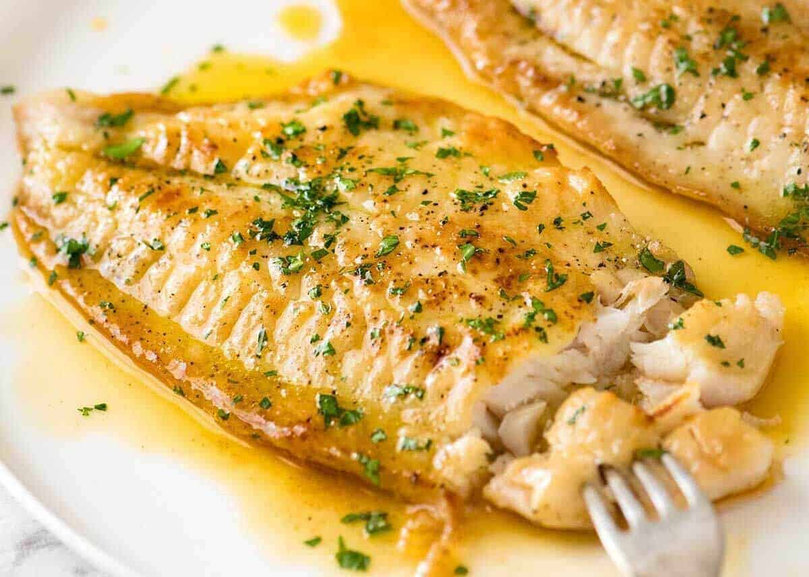

Lemon Butter Fish

Description
Lemon Butter Fish may be more frequently ordered at restaurants than made at home. It’s not your typical Tuesday night, in-between carpool fare.
But it can be. And it is. This Easy Lemon Butter Fish goes from stovetop to table top in just 20 minutes. This Easy Lemon Butter Fish is fabulous
with any tender, flaky, mild flavored white fish.
Just be sure your fillets are about 1-inch thick, to ensure that nice thick texture. Go for pieces that are about 6″ x 3″ in length and width.
We want nice-sized pieces. Besides that, a heavy, large and even-cooking skillet is your kitchen essential. For flipping delicate food like fish,
I use an extra wide stainless steel turner with a smooth/narrow edge to get underneath the food and flip it easily.
Ingredients
- 4 good-sized firm white fish fillets, about 6 inches long, 1-inch thickness
- 3 TB melted butter
- Juice and zest from 1 medium lemon
- 1 tsp kosher salt
- 1 tsp paprika
- 1 tsp garlic powder
- 1 tsp onion powder
- 1/4 tsp freshly ground black pepper
- 3 TB olive oil
- Freshly chopped basil or parsley leaves
- Extra lemon slices for serving
Steps
- Use paper towels to thoroughly pat-dry excess moisture from fish fillets – this step is crucial
for fish to brown nicely in pan. Set aside.
- In a bowl, combine melted butter, lemon juice and zest, and 1/2 tsp kosher salt. Stir to combine well.
Taste and add a bit more kosher salt, if desired.
- In a separate bowl, combine the remaining 1/2 tsp kosher salt, paprika, garlic powder, onion powder,
and black pepper. Evenly press spice mixture onto all sides of fish fillets.
- In a large, heavy pan over medium high heat, heat up the olive oil until hot. Once your oil is sizzling,
Cook 2 fish fillets at a time to avoid overcrowding (allows for even browning.) Cook each side just until
fish becomes opaque, feels somewhat firm in the center, and is browned – lightly drizzle some of the lemon
butter sauce as you cook, reserving the rest for serving. Take care not to over-cook, as that will result
in a tougher texture. Season with extra kosher salt and freshly ground black pepper to taste.
- Serve fish with with remaining lemon butter sauce, basil or parsley, and lemon wedges.